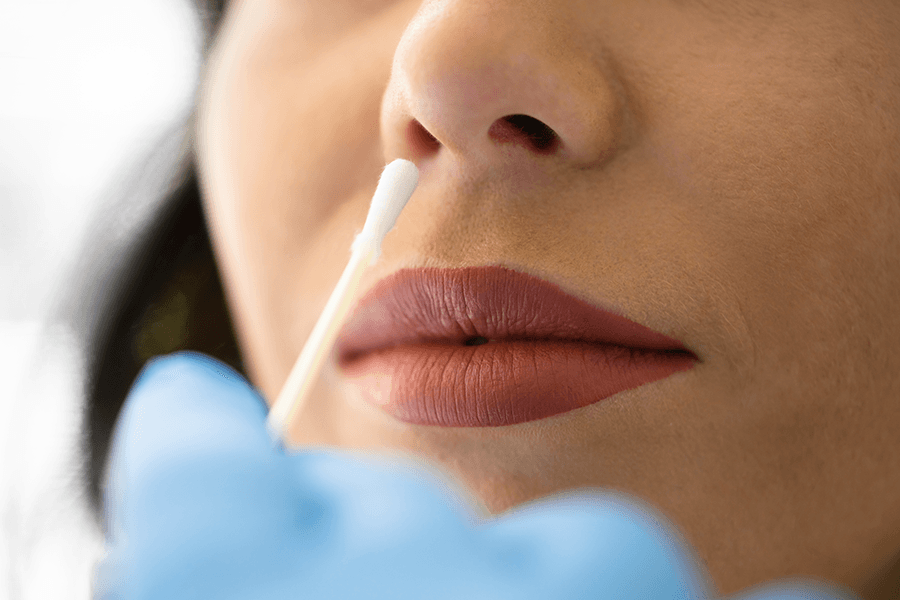
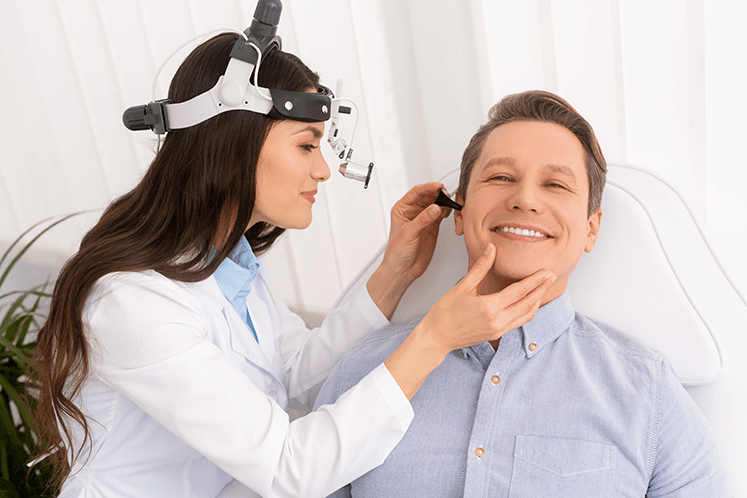

The Israeli Medical Association
Dr. Hanna Clooney is a member of the Israeli Medical Association and takes part in their events.
Dr. Hanna Clooney is one of the leading experts and a medical writer in the field of surgical and medical treatment of ear, nose, sinus, and throat conditions.
She is a graduate of a medical school with 9 years of postdoctoral training, including a residency in Otolaryngology/Head and Neck Surgery at Penn State Hershey Center, a residency in Internal Medicine at the Hospital of the University of Pennsylvania, and fellowship training at the Medical University of South Carolina. She has studied and trained at one of the most highly regarded medical schools – the New York University School of Medicine. She is a graduate of the Columbia University School of Engineering and Applied Science with BS in Engineering.
In addition to her medical practice, Dr. Hanna Clooney is a best-selling medical author and a guest editor of an issue of Facial Plastic Surgery. Her book became one of the best-selling books on Amazon and Barnes & Noble in 2010.
Read MoreDr. Hanna Clooney is a member of the Israeli Medical Association and takes part in their events.

Being based in New York, Hanna Clooney is an incumbent member of the American Medical Association.
Struggling for human rights is one of the moral stances of any practicing doctor in the world.

Dr. Hanna Clooney has joined the EMA since her first years of practicing in New York.
Whatever type of discomfort you feel, Dr. Hanna can help.
Genetic Diagnosis
Genetic diagnosis require a special approach to treatment, and a pripary diagnosis is needed
Some diseases can appear due to unbalanced flora and mucous membranes
Any consultation with atolaringologist continues with ENT-Tests.
If there is a suspicion of certain types of diseases, you will need to have your tests.
To ensure that the doctor can immediately identify the problem and prescribe treatment, follow these recommendations:
* To book an appointment with the doctor, you should either call us by the phone number mentioned below or fill out the patient reservation form online. After this, you will receive an e-mail with further instructions and recommendations to follow.
Book an AppointmentA consultation with Dr. Hanna Clooney takes an hour and a half on average. After that, you will need:
* After the first consultation, you can be recommended to visit a chemist in order to get the necessary treatment if it is prescribed by the doctor. There are several chemists close to the clinic, which is open 9 am -7 pm.
Book an AppointmentHanna Clooney often takes part in professional events.
From 18 to 20 September, Dr. Hannah Clooney will be attending a Belgian conference on topical ENT diseases. The conference will take place in Mont-Saint-Guibert.
Rue Demi-Lune 4, 1435 Mont-Saint-Guibert, BelgiumIn October, Dr. Clooney will head to Baden-Baden to take part in the Future on Medicine Conference. If you want to take part in the conference, too, you can buy tickets below.
Lange Str. 16, 76530 Baden-Baden, GermanyFeel free to contact the doctor if you need more information or wish to schedule your first consultation.
860 5th Ave #1B, New York,
NY 10065, United States
Monday - Saturday: 11 am - 9 pm
Sunday: 11 am - 7 pm
hannaclooney@email.com
+1 (234) 567 89 00